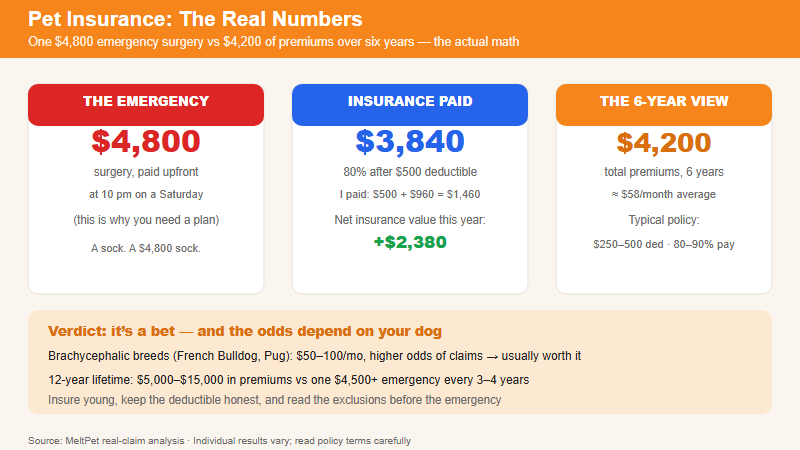

$30–$60/month × 12 years. The math versus the probability. | 2026-06-23 · MeltPet · 8 min read
Last updated: 2026-07-30
Five Thousand Dollars in One Night. That's When You Find Out.
My dog ate a sock at 11 PM on a Saturday. Not chewed. Swallowed. By 1 AM she was retching unproductively —the classic bloat-or-obstruction presentation that emergency vets dread. The emergency clinic quoted $4,800 for surgery, paid upfront. I had pet insurance. My reimbursement was $3,840 of that $4,800 —80% after a $500 deductible. I paid the deductible and $960 of the remaining cost. The insurance company paid the rest.
I've spent roughly $4,200 on pet insurance premiums over my dog's six years of life. That one claim nearly broke even on the entire investment. Another claim —a torn dew claw that got infected and needed sedation to clean and suture —would have pushed me well past break-even. If my dog ever blows a CCL or develops cancer, the insurance will have been one of the best financial decisions I've ever made.
But my situation is not your situation. Pet insurance is a math problem with a probability distribution, not a moral question. Let's run the numbers honestly.
The Actual Numbers
Typical policy terms: $250–$500 annual deductible, 80–90% reimbursement rate, $5,000–$15,000 annual maximum. Common exclusions: pre-existing conditions (permanent), bilateral conditions (one knee = both knees excluded), hereditary disorders in some policies, and routine/preventive care unless a wellness rider is purchased. Read the policy document before enrolling —not the marketing summary.
A mid-tier accident-and-illness policy for a young mixed-breed dog costs roughly $30–$60/month with a $500 deductible and 80% reimbursement. For a purebred prone to genetic conditions —French Bulldog, German Shepherd, Golden Retriever —expect $50–$100/month. Premiums increase with age, and some companies raise rates more aggressively than others. An 8-year-old Frenchie might cost $120/month to insure. Over a 12-year lifespan, total premiums paid might range from $5,000 (small mutt, insured young, modest increases) to $15,000 (purebred risk breed, insured from middle age).
Insurance doesn't cover pre-existing conditions. If your dog already has allergies, those are excluded for life. If your dog has had one CCL tear, the other knee may be excluded as "bilateral." This is why you should enroll when the dog is young —before anything shows up in a medical record.
Insurance doesn't cover routine care unless you buy a wellness add-on, which usually costs roughly what it reimburses. The math on wellness plans almost never works out as actual savings —you're prepaying for predictable expenses, not insuring against risk.

One emergency surgery vs six years of premiums — the actual insurance math.
Five Scenarios. One Math.
Scenario A: The Healthy Mutt. 12-year lifespan, one foreign body surgery at age 4 ($4,500), one dental with extractions at age 7 ($1,200). Total vet bills: $5,700. Insurance premiums: $6,000. Net: roughly break-even.
Scenario B: The CCL Tear. One cruciate ligament repair ($4,800), followed by the other knee two years later ($5,200). Total for just those two events: $10,000. Premiums: $6,000. Net: insurance ahead by $4,000.
Scenario C: The Cancer Dog. Lymphoma diagnosed at age 8. Chemotherapy protocol: $8,000–$12,000 over six months. Premiums: $7,500. Net: insurance ahead by $500–$1,500. Without insurance, this is the dog you either drain your savings for or euthanize because you can't afford treatment.
Scenario D: The Healthy Senior. 14 years, one dental, routine care, dies peacefully of old age. Premiums: $8,000. Claims: $1,500. Net: you lost $6,500 on insurance. This is the scenario everyone hopes for. It's also not the one you get to choose.
Scenario E: The Frenchie. BOAS surgery at age 2 ($4,500). IVDD surgery at age 5 ($9,000). Allergy management for 8 years ($800/year). Premiums: $12,000. Vet bills without insurance: $19,900. Net: insurance ahead by $7,900.
These numbers come from real vet bills, not estimates. The table below covers every procedure from the scenarios above, plus additional common emergencies —GDV/bloat in large dogs, urinary blockages in male cats, and what routine diagnostics and end-of-life care actually cost.
What Common Vet Procedures Actually Cost — 2026 National Averages
The numbers in the scenarios above aren't made up. They're based on current U.S. national averages for veterinary care. These vary by region —a CCL repair in Manhattan costs more than one in rural Kansas —but the ranges are consistent enough for planning. Every figure is the all-in cost: exam fee, diagnostics, anesthesia, procedure, and post-op medications.
Procedure
Typical Range
What It Covers
Insurance Pays (80% after $500 ded.)
Foreign body surgery (sock/ toy obstruction)
$3,500–$5,500
Exam, X-rays or ultrasound, anesthesia, gastrotomy or enterotomy, 1–2 night hospitalization, pain meds, e-collar
$2,400–$4,000
CCL / ACL repair (TPLO or TTA)
$4,000–$6,000
Pre-op bloodwork, radiographs, anesthesia, orthopedic surgery with plate and screws, 1 night hospitalization, 8 weeks of recheck visits and sedated X-rays
$2,800–$4,400
Dental cleaning with extractions
$500–$1,500
Pre-anesthetic bloodwork, full-mouth X-rays, scaling and polishing, simple and surgical extractions, pain medication. Not covered by most insurance unless accident-related.
$0–$800*
IVDD surgery (herniated disc —Dachshund, Corgi, Frenchie)
$7,000–$12,000
MRI or CT ($2,000–$3,000 of the total), hemilaminectomy, 3–5 days hospitalization, post-op physical rehab. The imaging alone costs more than most other surgeries.
$5,200–$9,200
Cancer chemotherapy (lymphoma protocol)
$6,000–$12,000
Oncology consult, staging diagnostics (ultrasound, aspirates), 16–25 week CHOP or COP protocol, CBC monitoring before each dose, anti-nausea medication. Most protocols are 4–6 months.
$4,400–$9,200
BOAS surgery (brachycephalic airway —Frenchie, Pug, Bulldog)
$3,000–$6,000
Pre-op airway assessment, soft palate resection, stenotic nares widening, sometimes saccules removal. One procedure, permanent improvement. Often done at 1–2 years old.
$2,000–$4,400
Emergency GDV / bloat surgery (large deep-chested breeds)
$5,000–$8,000
Emergency stabilization, decompression, gastropexy (tacking stomach to body wall), 2–4 days ICU. This is a middle-of-the-night emergency —the after-hours surcharge is built into the price.
$3,600–$6,000
Feline urinary blockage (male cat emergency)
$1,500–$3,500
Unblocking and flushing the urethra under sedation, urinary catheter placement, 48–72 hours hospitalization with IV fluids, urine culture. If it recurs and requires PU surgery, add $3,000–$5,000.
CBC, chemistry with SDMA, T4 (thyroid), urinalysis with culture. The single most valuable diagnostic for cats over 7 and dogs over 8. Not covered by accident-and-illness insurance —wellness add-on only.
$0–$200**
Euthanasia + private cremation
$300–$600
Sedation, euthanasia solution, private cremation with ashes returned. In-home services add $150–$300. Most insurance policies do not cover euthanasia or end-of-life care.
$0
* Dental coverage varies widely. Most accident-and-illness policies cover dental only if the damage is from trauma (hit by car, fractured tooth from a fall). Periodontal disease —the thing 80% of dogs and 70% of cats have —is excluded as "routine maintenance." Some insurers offer dental illness riders; verify in writing before buying. ** Wellness add-ons typically reimburse $150–$300 toward preventive diagnostics (annual bloodwork, urinalysis, vaccines). The $0–$200 range in the table reflects that most insurers cap reimbursement below the procedure's actual cost, and the add-on premium itself often equals or exceeds the payout. Wellness riders are prepayment, not insurance.
When you read a scenario above that says "CCL repair: $4,800," this table is where that number came from. The midpoint of the range, adjusted for a medium-sized dog in a mid-cost region. Your vet might quote $3,800. They might quote $6,200. The insurance math doesn't change —you're protecting against the high end of the range, because that's the one that breaks a budget.
When Insurance Makes Sense
Insurance is a good bet if: your dog is a breed with known expensive health conditions (French Bulldogs, English Bulldogs, German Shepherds, Golden Retrievers, any giant breed). If you couldn't comfortably absorb a $5,000–$10,000 emergency without debt. If you want the ability to say "yes" to treatment without a financial conversation. If your dog is young and has no pre-existing conditions —enroll now before anything shows up in the record.
Insurance is questionable if: your dog is already 8+ years old with documented conditions —premiums will be high and exclusions extensive. If you have a fully funded emergency fund of $10,000+ that you're willing to spend on the dog. If you're comfortable with the possibility of declining treatment based on cost —some people are, and that's a legitimate position, but you should know that's the position you're in before the emergency happens.
My personal rule, after five years in pet food and too many emergency vet stories: if you can't self-insure (meaning you have $10,000 you could spend on the dog tomorrow without debt), get insurance the day you bring the puppy home. If you can self-insure, the math is close enough that it's a preference call. But most people who say they'll self-insure just put off the decision until there's a crisis, and then there are no good options left.
🛒 Compare before you buy: Pet insurance pricing varies wildly by breed, age, and zip code. The three companies worth getting quotes from: Lemonade (simplest interface, best for young healthy dogs, bundled discounts if you have renters insurance with them), Trupanion (pays vets directly instead of reimbursing you —no upfront $5,000 on a credit card), and Healthy Paws (consistently high customer satisfaction, no annual or lifetime caps). Get quotes from all three —don't buy the first one you check. The same Frenchie in the same zip code can vary by $40/month between carriers.
Four Clauses in the Fine Print That Actually Matter
Most people buy pet insurance based on the monthly price and the reimbursement percentage. The policy document is 35 pages. Nobody reads it. These four clauses are the ones that determine whether your claim gets paid or denied —and they're buried somewhere around page 12.
1. Waiting periods. Every policy has them. Accidents: usually 2–5 days. Illnesses: usually 14 days. Cruciate ligaments (CCL/ACL tears): some policies make you wait six months before covering any knee injury. A dog who limps on day 179 of the waiting period has a pre-existing condition. A dog who limps on day 181 is covered. The insurance company knows exactly what they're doing with that timeline. Read the orthopedic waiting period. It's the one that burns people.
2. Bilateral condition exclusions. Your dog blows her left CCL. Surgery is $5,000. Insurance pays. Two years later, the right CCL tears —this happens in roughly 40–60% of dogs who blow one knee. Some policies cover the second knee. Some exclude it as a "bilateral condition," meaning one side = both sides excluded. This single clause can mean the difference between a $5,000 claim being paid or denied. Companies that cover bilateral conditions: Trupanion and Healthy Paws generally do. Lemonade's policy language is less clear. Ask before you buy.
3. Dental coverage. Most policies cover dental extractions if the tooth was broken in an accident. Almost none cover periodontal disease —the thing 80% of dogs have by age three. A $1,200 dental cleaning with extractions is not an accident. It's maintenance. If dental coverage matters to you, you need a policy that specifically includes it or a wellness add-on. Most wellness add-ons reimburse $150–$300 toward a cleaning that costs $800–$1,200. The math isn't great.
4. Hereditary and congenital condition coverage. This is the one that matters for purebred dogs. Hip dysplasia in a German Shepherd? Covered by good policies, excluded by cheap ones. IVDD in a Dachshund? Same. BOAS surgery in a French Bulldog? Covered by some, excluded as "elective" by others even though it's medically necessary. If your breed has a known hereditary condition —and most purebreds do —verify in writing that the policy covers it before you buy. The customer service rep's verbal assurance is worth nothing when the claim is denied. Get it in email.
What Actually Happens When You Submit a Claim
The marketing shows a happy dog and the words "hassle-free claims." Here's what actually happens.
Your dog has an emergency. You pay the vet upfront —credit card, CareCredit, or savings. The bill is $4,800. You go home, log into the insurance portal, upload the invoice and the vet's SOAP notes (the clinical notes from the visit). Some vets upload these directly. Some make you request them. Either way, the insurance company won't process the claim without the medical notes —the invoice alone isn't enough. If the notes mention that your dog "has been limping intermittently for the past month" and your policy started two weeks ago, the claim is denied as pre-existing. Every word in your dog's medical record matters. Never tell the vet "this has been going on for a while" on a recorded visit unless it's true and you're prepared for it to be used as a pre-existing exclusion.
Processing takes 5–14 days for most companies. Trupanion is faster because they pay the vet directly —you only pay your portion at checkout. For everyone else, you're floating the full bill on a credit card for two weeks. Direct vet pay is the single most underrated feature in pet insurance. If you don't have a credit card with a $5,000+ limit, a Trupanion-style direct-pay policy is worth the higher premium. The alternative —applying for CareCredit at 2 AM in an emergency vet lobby while your dog is on oxygen —is exactly as bad as it sounds.
Self-Insurance: The Math No One Runs
Instead of $50/month to an insurance company, you put $50/month into a dedicated high-yield savings account. After 10 years, assuming 4% interest, you have roughly $7,300. After 12 years: roughly $9,200. That covers one major surgery or two moderate emergencies over the dog's lifetime.
The problem isn't the math. The problem is what happens when your puppy eats a sock at 8 months old and needs a $4,500 foreign body surgery —and your "self-insurance fund" has $400 in it. That's $4,100 on a credit card at 22% APR. The self-insurance math only works if your dog stays healthy for the first 3–4 years while the fund builds. Most catastrophic vet expenses don't wait until year 7.
A hybrid approach: buy insurance for the first 3–4 years, while simultaneously building a savings fund. When the fund hits $8,000–$10,000, cancel the insurance and self-insure from there. This captures the high-risk puppy years (foreign bodies, accidents, congenital conditions that appear early) and avoids paying premiums for 12 years. The downside: if your dog develops a chronic condition during the insured years and you cancel, that condition is now uninsurable if you ever want to go back. There's no perfect answer. But "put it on a credit card and hope for the best" is the one strategy that's guaranteed to fail eventually.
📚 Sources
North American Pet Health Insurance Association (NAPHIA).State of the Industry Report, 2025.